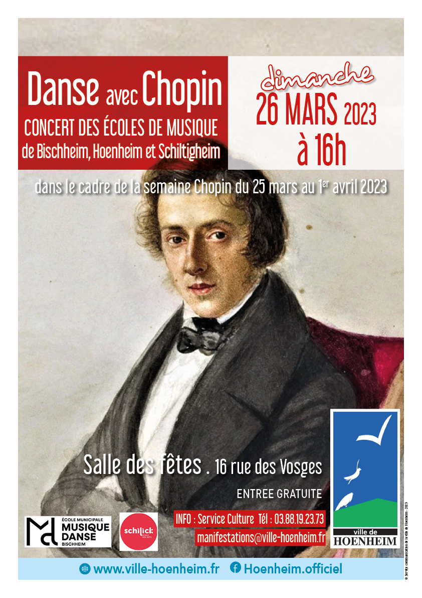

- Cet événement est terminé
Concert « Danse avec Chopin »
26 mars 2023 à 16 h 00 min - 17 h 00 min
Navigation de l'événement

Dans le cadre de la semaine Chopin du 25 mars au 1er avril 2023, venez découvrir le concert « Danse avec Chopin » dimanche 26 mars à 16h à la Salle des Fêtes de Hoenheim, 16 rue des Vosges par les écoles de musique municipales de Hoenheim, Bischheim et Schiltigheim.
De salon ou d’agrément, les valses de Frédéric Chopin s’inscrivent parmi les pièces les plus jouées de son répertoire. Les classes de danse viendront prêter leurs pas et leur grâce à l’interprétation de plus belles Valses et Mazurkas du compositeur.
Entrée gratuite.
Info auprès du service Animation de la Ville : 03 88 19 23 73 ou manifestations@ville-hoenheim.fr.